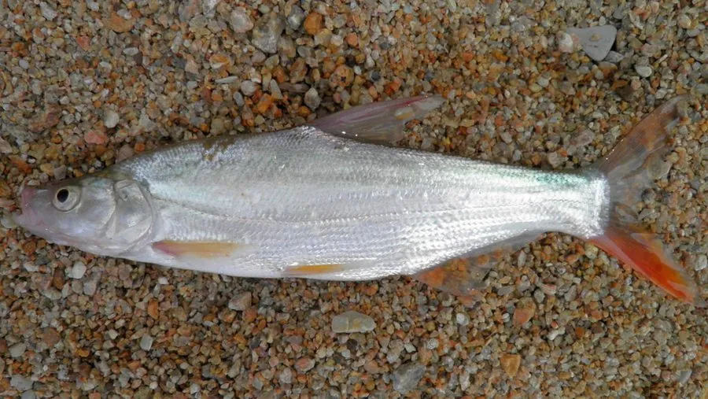

鱼类 · 动物界
蒙古鲌 Culter mongolicus

中国东部水系常见的中上层肉食鱼，体形侧扁、尾鳍鲜红，游泳迅速，以小鱼小虾为食，是江河湖泊中的凶猛捕食者。
- 分类
- 门脊索动物门纲硬骨鱼纲目鲤形目科鲤科属鲌属
- 栖息环境
- 江河、湖泊与水库的中上层，喜水质清新、有一定流速的水域
- 地理分布
- 中国黑龙江至珠江各大水系，以及俄罗斯远东和朝鲜半岛
- 保护级别
- IUCN 暂无评估
物种志
蒙古鲌体长一般 30–50 cm，最大可达 60 cm 以上，体重 1–3 kg。身体侧扁而长，头尖，口上位、下颌略突出，背部灰褐，体侧银白，各鳍灰黑，尾鳍下叶常带鲜红色，鳞片细小，侧线平直。
它们分布于中国黑龙江至珠江的各大水系，也见于俄罗斯远东和朝鲜半岛，栖息于江河、湖泊和水库的中上层。蒙古鲌游泳迅速，是凶猛的肉食性鱼类，主要追捕小鱼、虾和水生昆虫，幼鱼则吃浮游动物。繁殖期在 5–7 月，亲鱼溯流而上，在流水中产卵，卵随水漂流孵化。由于肉质细嫩，它是重要的经济鱼类，也是路亚和传统钓法的常见对象；目前野生资源受水利工程和过度捕捞影响，需加强管理。
形态与习性
- 食性小鱼、虾、水生昆虫，幼鱼吃浮游动物
- 体长一般 30–50 cm，最大可超 60 cm
- 体重1–3 kg
- 繁殖5–7 月溯流而上，在流水中产卵
- 习性中上层活动，游泳迅速，性情凶猛
- 经济肉质细嫩，是重要的经济鱼类
趣味知识
- 蒙古鲌的尾鳍下叶常带鲜红色，渔民因此叫它红尾鱼。
- 它口上位、下颌突出，适合从下方突袭小鱼。
- 幼鱼吃浮游动物，长大后转为凶猛的肉食性。